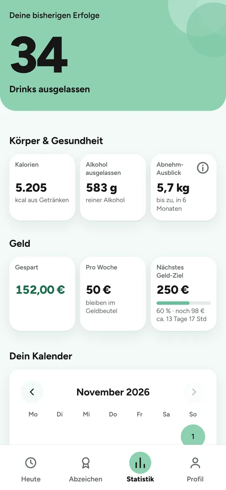
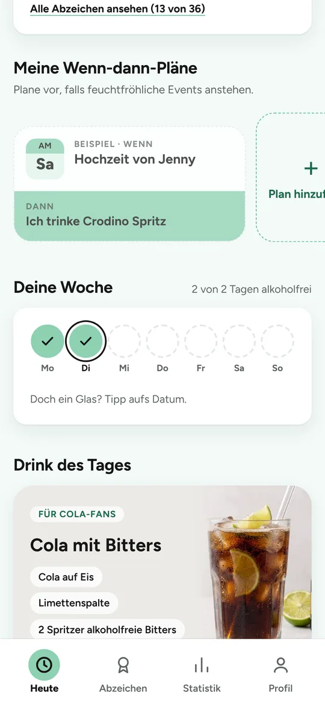

Mach mal Pause. Dein Körper sagt Danke.
Bald ist Dry January!
Glasklar begleitet dich beim Reduzieren oder Pausieren: ohne erhobenen Zeigefinger & mit sichtbaren Fortschritten.
- Kostenlos
- Keine Anmeldung
- Deine Daten bleiben auf deinem Handy
Kleine Pause, große Wirkung
Schon nach wenigen Tagen ohne Alkohol schläfst du tiefer, wachst klarer auf und hast mehr Energie.
Glasklar hilft dir dabei.
Spür, was sich verändert
Abzeichen zeigen dir, was in deinem Körper passiert: besserer Schlaf, ruhigerer Puls, mehr Power im Training.
Sieh, was du sparst
Geld und Kalorien zählen ab der ersten Stunde mit, berechnet aus deinen bisherigen Trinkgewohnheiten.
Genieß Alternativen
Jeden Tag ein neuer alkoholfreier Drink, der genauso gut ins Glas passt wie das Original.
So sieht Glasklar aus
Übersichtlich, freundlich und in wenigen Sekunden eingerichtet.
Dein Tag
Abzeichen

Statistik

Drink des Tages
Durst auf was Neues?
18 alkoholfreie Drinks, vom Crodino Spritz bis zum Espresso Tonic.